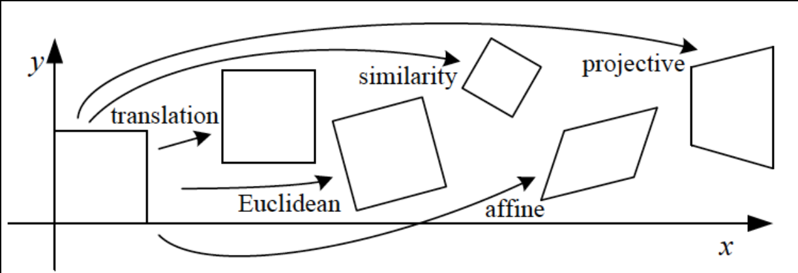

Image-to-Image Projections
2D Transformation

Projective Transformation Matrix
For 2D images it's a 3x3 matrix applied to homogeneous coordinates
Special Projective Transformations
These are homogeneous coordinates
Translation
Preserves:
- Length/Areas
- Angles
- Orientation
- Lines
Number of pairs of points needed to compute: 1 (2 unknowns)
Euclidean
Preserves:
- Length/Areas
- Angles
- Lines
Number of pairs of points needed to compute: 2 (3 unknowns)
Similarity
Preserves:
- Ratios of Areas
- Angles
- Lines
Number of pairs of points needed to compute: 2 (4 unknowns)
Affine
Preserves:
- Parallel lines
- Ratio of Areas
- Lines
Number of pairs of points needed to compute: 3 (6 unknowns)
Homography
Preserves:
- Lines
Number of pairs of points needed to compute: 4 (8 unknowns)